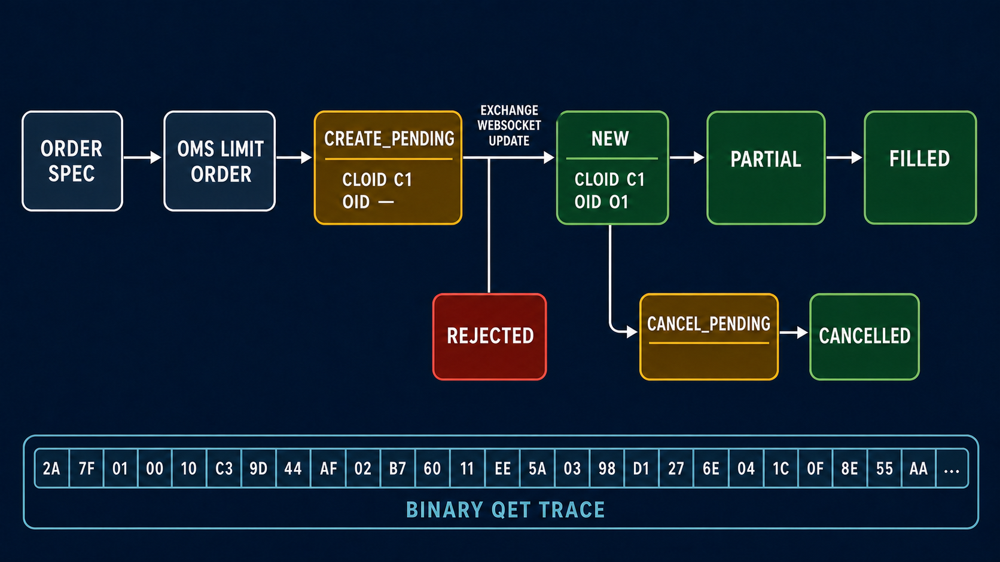
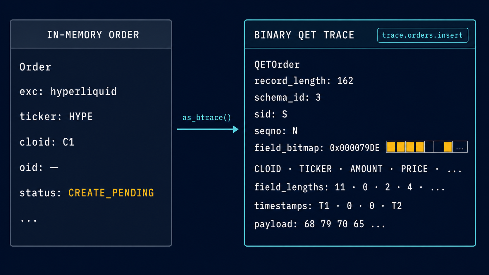
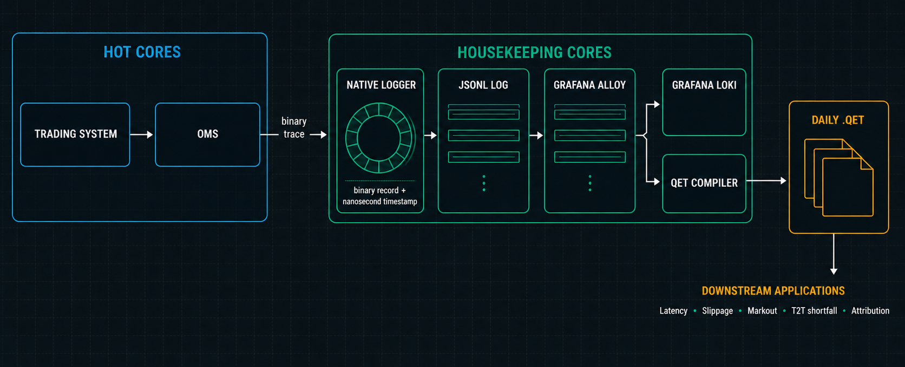

HFT Event Journal
In software, an event journal is an ordered, append-only record of state transitions accepted by a system. In a HFT trading system, it provides a durable record of important in-memory artefacts such as order state transitions, fills, position deltas, and portfolio snapshots. These artefacts can be used downstream for a number of important business functions:
- latency analysis;
- slippage analysis;
- markout and adverse-selection analysis;
- tick-to-trade shortfall;
- trading-cost attribution; and
- reconciliation and incident replay.
Event journalling is a core component of replay fidelity. A replay recovers the order in which the live process observed and accepted state changes. An ordered journal lets us rebuild those transitions and inspect where live and replayed behaviour diverge.
Here, we give a rundown of quantpylib's native binary event-journal architecture, including its low-latency logging transport, Grafana Alloy fanout, and Quantpylib Event Trace (QET) compiler. We will also show how quantpylib users can produce QET trace files directly from an OMS workflow.
Artefacts
In quantpylib, the following portfolio artefacts are journalled:
- order state changes;
- fill insertions;
- position deltas;
- order snapshots; and
- position snapshots.
For the exact fields, timestamp definitions, and update semantics, refer to the portfolio standards and order constants.
We will use an order lifecycle as the running example. Consider the following HYPE limit order:
from decimal import Decimal
order = {
"exc": "hyperliquid",
"ticker": "HYPE",
"amount": Decimal("1"),
"price": Decimal("20"),
"tif": "Alo",
"cloid": oms.rand_cloid(exc="hyperliquid"),
}
await oms.limit_order(**order)
The OMS first constructs the exchange-native order wire. Before
submitting that wire, it inserts the order into its in-memory Orders ledger
with a CREATE_PENDING status and a local ts_submit_ns. At this point the
client order ID (cloid) is known, but the exchange order ID (oid) usually
is not. CREATE_PENDING means exactly that: the local process has attempted a
submission, but no exchange acknowledgement has been accepted yet.
When an update arrives through the private order WebSocket, the ledger resolves
the order by cloid or oid and applies its staleness and identity checks. A
successful acknowledgement will typically complete the identity with an
oid and transition the order to NEW. A rejected submission transitions to
REJECTED. Later updates may move a live order through PARTIAL and FILLED,
or through CANCEL_PENDING and CANCELLED when we attempt a cancellation.

The diagram is deliberately simplified. The exact path depends on the venue and execution outcome.
For the CREATE_PENDING order above, the in-memory object and its trace
artefact look like this:

S identifies the
trading session, while N is the session's trace sequence number. Based on the state machine, the appropriate events. such as trace.orders.insert,
trace.orders.state_transition is created.
These actions occur in the trading hot path, so an inefficient transport would make the journal unusable. The trace artefact is compactly encoded as raw bytes and handed to quantpylib's high performance logging subsystem. The logger is a native C++ implementation adapted into byte buffers over the LMAX Disruptor pattern. Read the design here: Designing State-of-the-Art Logging in Python. Insofar as the trading system is concerned, the trace is complete. This makes the trace subsystem a lightweight attachment (a normal logging statement) and non-intrusively composed with client applications.
QET Compilation
Once the logging hand-off is complete, the log file receives JSONL records of the following shape.
{"level": "INFO", "time": "2026-07...", "message": "trace", "event": "trace.orders.insert", "trace": "qwAAAAMAAAAHAAAA...VzAw"}
event identifies the accepted mutation. trace is the original binary
artefact, base64-encoded. Trace records
and ordinary application logs may share the same file.
An event journal can be attached directly to a live trading system. quantpylib instead uses the log files as the substrate and compiles QET files in a separate, cold process. The trading process is finished once it hands the record to the logger; parsing, ordering, deduplication, and journal I/O remain outside the live system.
Many firms already operate some form of the Grafana logging stack. Grafana Alloy acts as the collector. The usual destination is Grafana Loki, which stores compressed log chunks and indexes their labels for later queries.

quantpylib piggybacks on this battle-tested transport. We configure Alloy to push the same records to our compiler's Loki-compatible endpoint:
This can be the sole destination or added to an existing Alloy pipeline.
The compiler is a small local HTTP service that implements the Loki push API.
It decompresses each Snappy-compressed protobuf batch, recovers the original
JSON line, filters trace records, base64-decodes the trace, and validates
the QET schema and record length. The Loki entry timestamp selects the UTC
output day; the trace's sid and seqno is used for ordering and idempotence. The compiler then appends the original
binary records to a daily .qet file.
Example
Here we will give a walkthrough of how to wire them together.
Install Alloy using
Grafana's
platform instructions.
The Alloy CLI supports both validate and run; its current command reference
is here.
1. start the compiler
python3.11 -m quantpylib.hft.qet_compiler serve \
--root ./qet \
--host 127.0.0.1 \
--port 33200 \
--buffer-size 48
Check its counters from another terminal:
2. start Alloy
examples/configs.alloy points Alloy at an absolute log glob and at the local
compiler. Point Alloy at the file written by journal.py:
export QUANTPYLIB_LOG_PATH="$(pwd)/logs/journal.log"
alloy validate examples/configs.alloy
alloy run --storage.path=./.alloy-data examples/configs.alloy
3. run the journal.py example
scripts/journal.py:
import os
import asyncio
import logging
from decimal import Decimal
from dotenv import load_dotenv
from quantpylib.hft.oms import OMS
from quantpylib.logger import Logger
from quantpylib.gateway.master import Gateway
load_dotenv()
exchange = "bybit"
ticker = "HYPEUSDT"
amount = Decimal("1")
price = Decimal("10")
async def main():
gateway = Gateway({
exchange: {
"key": os.environ["TEST_BYBIT_KEY"],
"secret": os.environ["TEST_BYBIT_SECRET"],
},
})
await gateway.init_clients()
os.makedirs("logs", exist_ok=True)
logger = Logger(
name="perf",
stdout_register=True,
filename="journal.log",
logs_dir="./logs",
file_level=logging.INFO,
)
oms = OMS(gateway, logger=logger)
try:
await oms.init()
cloid = oms.rand_cloid(exc=exchange)
res = await oms.limit_order(
exc=exchange,
ticker=ticker,
amount=amount,
price=price,
cloid=cloid,
)
print(res)
await asyncio.sleep(5)
res = await oms.cancel_order(exc=exchange, ticker=ticker, cloid=cloid)
print(res)
finally:
await oms.cleanup()
logger.shutdown()
if __name__ == "__main__":
asyncio.run(main())
In journal.log we see one insert and three state transitions, corresponding to create, create-ack, cancel, and cancel-ack. We also see snapshots, which allow recovery when a new session begins.
{"ts":"2026-07-26 17:15:25.642","level":"INFO","filename":"portfolio.py","line":1157,"msg":"trace","event":"trace.orders.snapshot","trace":"b'...'"}
{"ts":"2026-07-26 17:15:25.766","level":"INFO","filename":"portfolio.py","line":408,"msg":"trace","event":"trace.positions.snapshot","trace":"b'...'"}
{"ts":"2026-07-26 17:15:25.965","level":"INFO","filename":"portfolio.py","line":1354,"msg":"trace","event":"trace.orders.insert","trace":"b'...'"}
{"ts":"2026-07-26 17:15:25.998","level":"INFO","filename":"portfolio.py","line":1354,"msg":"trace","event":"trace.orders.state_transition","trace":"b'...'"}
{"ts":"2026-07-26 17:15:31.000","level":"INFO","filename":"portfolio.py","line":1354,"msg":"trace","event":"trace.orders.state_transition","trace":"b'...'"}
{"ts":"2026-07-26 17:15:31.093","level":"INFO","filename":"portfolio.py","line":1354,"msg":"trace","event":"trace.orders.state_transition","trace":"b'...'"}
Inspect the generated qet file here:
from pathlib import Path
from quantpylib.hft.qet import QETReader, QET_SCHEMA_REGISTRY
path = sorted(Path("qet").glob("*.qet"))[-1]
reader = QETReader(path)
for event in reader.decoded_records():
event_type = QET_SCHEMA_REGISTRY[event["schema_id"]].partition("(")[0]
print(event["sid"], event["seqno"], event_type)